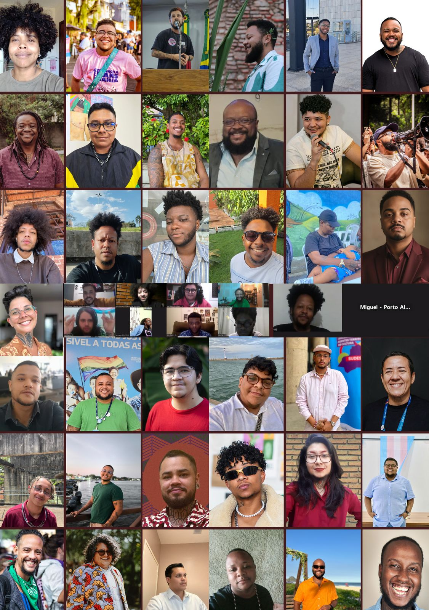
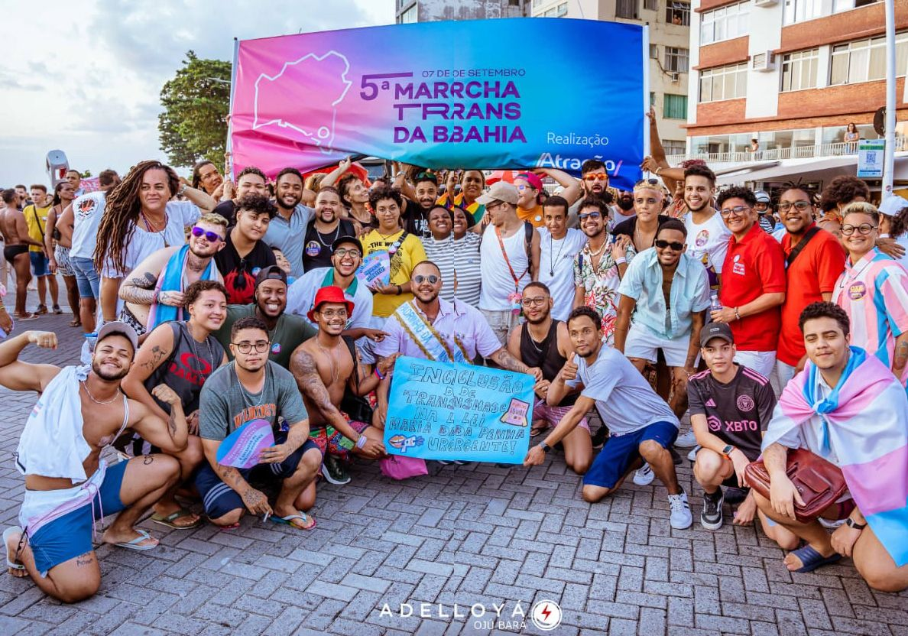

I Fórum Nacional
Realizado durante a II Marsha Trans Brasil, em Brasília, com mais de 100 pessoas. Dele saiu a decisão de fazer fóruns em cada região.
150+
Nos 5 Fóruns Regionais, de 29 de outubro a 4 de novembro de 2025, eles disseram o que falta para que o SUS cuide dos seus corpos.
O Dossiê sistematiza as falas dos Fóruns Regionais com metodologia qualitativa e participativa. Os relatos de participantes aparecem sem identificação.

As três perguntas dos Fóruns
Realizado durante a II Marsha Trans Brasil, em Brasília, com mais de 100 pessoas. Dele saiu a decisão de fazer fóruns em cada região.
Norte, Nordeste, Centro-Oeste, Sudeste e Sul, sobre justiça reprodutiva e direito à saúde.
No II Fórum Nacional, na Câmara dos Deputados, o Dossiê é entregue aos Ministérios da Saúde, da Igualdade Racial e dos Direitos Humanos e Cidadania.
O Brasil tem realidades regionais muito diferentes, mas a exclusão de homens trans negros e periféricos do SUS segue o mesmo padrão em todo o país.
A atenção básica empurra qualquer demanda de homens trans para o ambulatório especializado.
Profissionais que “aprendem” no paciente e desrespeitam nome social e acordos cirúrgicos.
Falta informação sobre testosterona, fertilidade, contracepção e preservação de gametas.
A ideia racista de que pessoas negras sentem menos dor leva à recusa de analgesia no parto.
Fome, moradia e transporte decidem se o tratamento continua.
Os sistemas do SUS não cruzam identidade de gênero, raça e território. Sem dados, não há orçamento.
Ao transicionar, homens trans perdem redes e práticas de cuidado que tinham antes.
Políticas que só enxergam mulheres cis como pessoas que gestam.
À esquerda, em rosa, o que homens trans relataram nos Fóruns Regionais do Dossiê. À direita, em branco, os serviços públicos de saúde para pessoas trans encontrados no Levantamento do Instituto de Justiça Reprodutiva e Liga Transmasculina João W. Nery.
Lugar de atendimento sem internação: consultas, acompanhamento com equipe de várias áreas, hormonização com testosterona e cuidado antes e depois de cirurgias. Inclui alguns serviços de apoio, como centros de testagem (CTA/SAE) e CREAS.
Hospital que faz, pelo SUS, as cirurgias do Processo Transexualizador, com internação, seja habilitado pelo Ministério da Saúde ou com oferta confirmada pelo hospital ou pela gestão local. Para homens trans: mastectomia (retirada das mamas) e histerectomia (retirada do útero).
Estado onde o levantamento não encontrou nenhum ambulatório nem hospital para pessoas trans. Quem mora lá precisa viajar para outro estado para ser atendido.
Relatado nas escutas
“Quando a gente pensa em gestação, as pessoas vão pensar em corpos de mulheres cis. Não vão pensar nos corpos de homens trans.”Relato do Fórum Regional Norte
Diagnóstico regional: Ravi Veiga, Casa Duda LGBTQIA+ da Amazônia
O que existe, segundo o levantamento
Os 4 serviços ambulatoriais da região ficam só em Manaus (1) e Belém (3). Interior e comunidades ribeirinhas não têm serviço listado.
Não são só Rondônia e Roraima: Acre, Amapá, Rondônia, Roraima e Tocantins não têm nenhum serviço listado. São 5 dos 7 estados da região.
Único hospital com cirurgias na região: Hospital Jean Bitar, em Belém.
Fonte: Levantamento do Instituto de Justiça Reprodutiva e Liga Transmasculina João W. Nery; hospitais: pesquisa complementar (veja as fontes no mapa abaixo)
Relatado nas escutas
“Precarizados na porta de entrada, patologizados no corredor e desumanizados na sala de procedimentos.”Relato do Fórum Regional Nordeste
Diagnóstico regional: Aladdin Andrade (Kunty com Dendê) e Gabriel Lupin (Coletivo De Transs Pra Frente)
O que existe, segundo o levantamento
Bahia (2), Alagoas (1) e Ceará (1) têm serviços listados, nos estados onde as escutas apontaram boas práticas.
Os 9 estados da região têm ao menos um serviço, mas a distribuição é desigual: Pernambuco concentra 7 dos 18.
Hospitais com cirurgias pelo SUS: Hospital das Clínicas da UFPE, Cisam/UPE e Hospital da Mulher do Recife (Recife); Hupes/UFBA (Salvador); Maternidade-Escola Assis Chateaubriand (Fortaleza); Hospital Metropolitano de Alagoas (Maceió).
Fonte: Levantamento do Instituto de Justiça Reprodutiva e Liga Transmasculina João W. Nery; hospitais: pesquisa complementar (veja as fontes no mapa abaixo)
Relatado nas escutas
“Tive que ouvir dos próprios médicos que eles iriam ‘aprender’ junto comigo. Eu não sou médico, não acredito que eu tenha que ser a pessoa que orienta ali.”Relato do Fórum Regional Centro-Oeste
Diagnóstico regional: Ariel Arcannjo, Liga Transmasculina João W. Nery
O que existe, segundo o levantamento
Goiás tem 4 serviços: 3 em Goiânia e 1 em Itumbiara. Nenhum em Jataí, o que explica os longos deslocamentos.
O Mato Grosso tem um único serviço, em Cuiabá. Se ele fechar, o estado fica sem nenhum.
Os 2 hospitais com cirurgias da região ficam em Goiânia. Mato Grosso do Sul tem 1 serviço, em Campo Grande.
Fonte: Levantamento do Instituto de Justiça Reprodutiva e Liga Transmasculina João W. Nery; hospitais: pesquisa complementar (veja as fontes no mapa abaixo)
Relatado nas escutas
“E eu lá atrás fui deixando isso porque ou eu comia ou eu pagava passagem para o ambulatório. E eu tive que escolher sobreviver.”Relato do Fórum Regional Sudeste
Diagnóstico regional: Francisco Silva, Liga Transmasculina João W. Nery
O que existe, segundo o levantamento
Muitos serviços paulistas funcionam dentro de serviços de IST/aids (SAE e CTA), como relatado.
A concentração não é só nas capitais: 51 dos 61 serviços da região estão em São Paulo. Minas Gerais e Rio de Janeiro têm 4 cada; o Espírito Santo, 2.
No Rio de Janeiro, depois da regulação, o acompanhamento especializado é feito em dois serviços: Instituto Estadual de Diabetes e Endocrinologia (IEDE) e Hospital Universitário Pedro Ernesto (HUPE/UERJ). Hospitais com cirurgias pelo SUS: Hospital Municipal Mário Degni, Hospital Pedreira e HC-FMUSP (São Paulo) e Hospital Diadema; HUPE/UERJ e Gaffrée e Guinle (Rio de Janeiro); HU-UFJF (Juiz de Fora).
Fonte: Levantamento do Instituto de Justiça Reprodutiva e Liga Transmasculina João W. Nery; hospitais: pesquisa complementar (veja as fontes no mapa abaixo)
Relatado nas escutas
“Se já existe um apagamento das transmasculinidades brancas, quando a gente fala das transmasculinidades negras, a gente vai para um apagamento completo.”Relato do Fórum Regional Sul
Diagnóstico regional: Athos Souza, Marcha Trans de Porto Alegre
O que existe, segundo o levantamento
O Sul tem a segunda maior rede do país: 28 serviços, 22 deles no Rio Grande do Sul. Paraná e Santa Catarina têm 3 cada.
Ter serviço não garante acesso igual: em pesquisa citada no Dossiê, 77,9% dos usuários do ambulatório trans de Porto Alegre são brancos.
Hospitais com cirurgias pelo SUS: Hospital de Clínicas da UFPR (Curitiba), Hospital de Clínicas de Porto Alegre e Hospital Universitário Dr. Miguel Riet Corrêa Jr. (Rio Grande).
Fonte: Levantamento do Instituto de Justiça Reprodutiva e Liga Transmasculina João W. Nery; hospitais: pesquisa complementar (veja as fontes no mapa abaixo)
Toque em um estado no mapa ou escolha na lista. As cores mostram o que existe em cada um: os serviços ambulatoriais do Levantamento do Instituto de Justiça Reprodutiva e Liga Transmasculina João W. Nery, os serviços habilitados pelo Ministério da Saúde e os hospitais que fazem cirurgias do Processo Transexualizador pelo SUS, com fonte para cada um.
O número em cada estado é a quantidade de serviços ambulatoriais do levantamento; nos estados menores, ele aparece ao tocar. Mapa base: SVG Maps (CC BY 4.0).
Selecione um estado para ver quantos serviços ambulatoriais e hospitais com cirurgias existem nele.
O levantamento lista 121 serviços ambulatoriais. Somando a pesquisa complementar, há pelo menos 19 hospitais fazendo cirurgias do Processo Transexualizador pelo SUS, em 11 estados. Quase metade dos serviços fica em São Paulo. O Norte tem 4.
serviços ambulatoriais: consultas e acompanhamento, sem internaçãohospitais com cirurgias pelo SUS (pesquisa complementar)
Fonte: Levantamento do Instituto de Justiça Reprodutiva e Liga Transmasculina João W. Nery. Contagem por região; inclui serviços habilitados e não habilitados pelo Ministério da Saúde, e alguns serviços de apoio, como CTA e CREAS. O próprio levantamento registra que há serviços que não estão habilitados e que o número segue insuficiente.
“Se já existe um apagamento das transmasculinidades brancas, quando a gente fala das transmasculinidades negras, a gente vai para um apagamento completo.”Relato do Fórum Regional Sul
O Sul tem a segunda maior rede de serviços do país, mas quem chega até ela não reflete a população negra da região.
Mitos que circulam e afastam homens trans do cuidado. Para cada um, o que as escutas mostraram e o que é fato, segundo o Dossiê e o Levantamento do Instituto de Justiça Reprodutiva e Liga Transmasculina João W. Nery.
Nas escutas, a falta de informação sobre testosterona, fertilidade e contracepção apareceu como uma forma de “esterilidade simbólica”.Diagnóstico do Dossiê, a partir dos Fóruns
FatoA testosterona pode interromper a menstruação, mas não impede a gravidez. O Dossiê alerta que esse mito expõe homens trans a gestações não planejadas.
“Quando a gente pensa em gestação, as pessoas vão pensar em corpos de mulheres cis. Não vão pensar nos corpos de homens trans.”Relato do Fórum Regional Norte
FatoHomens trans também menstruam, engravidam, gestam, têm partos e podem recorrer ao aborto. Precisam de pré-natal e cuidado no parto e no pós-parto.
“Se eu quebrar um braço, tiver diabetes ou uma crise de enxaqueca, não é o ambulatório trans que deveria dar conta disso.”Relato do Fórum Regional Centro-Oeste
FatoA Atenção Básica (a UBS) é a porta de entrada prioritária no SUS, também para pessoas trans, com acolhimento humanizado e respeito ao nome social.
Quando foi criado no SUS, em 2008, o Processo Transexualizador atendia apenas mulheres trans.Histórico registrado no levantamento
FatoDesde 2013, com a Portaria nº 2.803, homens trans e travestis também têm direito ao Processo Transexualizador no SUS.
Nas escutas, o pedido não é por cirurgias que não existem, e sim por respeito aos acordos feitos com quem opera.Diagnóstico do Dossiê, a partir dos Fóruns
FatoMastectomia e histerectomia estão na tabela de procedimentos do SUS para o Processo Transexualizador. Hospitais em pelo menos 11 estados fazem essas cirurgias pelo SUS, como o Hospital Municipal Mário Degni, em São Paulo, e o Hospital das Clínicas da UFPE, no Recife.
“Precarizados na porta de entrada, patologizados no corredor e desumanizados na sala de procedimentos.”Relato do Fórum Regional Nordeste
FatoQuem tem colo do útero precisa do rastreio, com ou sem testosterona. O Dossiê mostra que homens trans fazem menos esse exame por medo de constrangimento e por negligência.
Organizadas em sete blocos, com cinco recomendações para cada ente. No Dossiê completo, cada uma vem com o caminho de implementação e os benefícios para a população e para a gestão pública. Toque em um bloco para ver as cinco.
O básico, segundo o Levantamento do Instituto de Justiça Reprodutiva e Liga Transmasculina João W. Nery.
Saúde é direito. O SUS deve cuidar de pessoas trans por inteiro, não só da transição.
Acolhimento humanizado, sem discriminação e com respeito ao nome social.
Da UBS, encaminhamento regulado para um serviço especializado do Processo Transexualizador.
Nos ambulatórios, acompanhamento por equipe multiprofissional e testosterona disponibilizada mensalmente.
Mastectomia e histerectomia em hospitais habilitados, com acompanhamento antes e depois.
Desde 2013 (Portaria nº 2.803), homens trans e travestis têm direito ao Processo Transexualizador.
Onde procurar: o levantamento traz, para cada estado, os serviços com endereço, horário e telefone.
Referências
Fotos publicadas no Dossiê: marchas trans de norte a sul do país e a presença transmasculina no Congresso Nacional.
